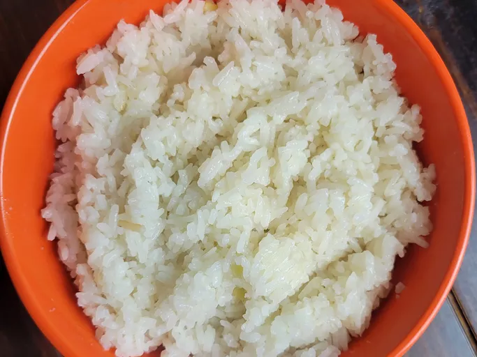

Coconut Rice

Description
This coconut ginger rice is perfect to pair with your favorite Asian-inspired dish. Fragrant, long-grain jasmine rice simmers with fresh ginger and coconut milk.
Ingredients
- 3 cups jasmine rice, or any long-grain rice
- 1 cup coconut milk
- 2 cups vegetable broth or water
- 1 tablespoon chopped fresh ginger
- 1 tablespoon butter
- 1 teaspoon salt
Steps
- Rinse and drain rice; add to a large pot. Stir in coconut milk, broth, ginger, butter, and salt.
- Cover and cook until rice is tender and liquid is absorbed, 15 to 20 minutes, checking for doneness occasionally. Adjust heat as needed.